Witam, do sprzedania Ford Explorer Plug In Hybrid. Samochód kupiony w Polskim salonie i serwisowany tylko i wyłącznie w autoryzowanym serwisie Ford w Poznaniu. Samochód bardzo zadbany i doinwestowany przeze mnie, mianowicie: 1) Oklejenie folią "mleczną", tj. nie zmieniającą koloru samochodu, lecz zmieniającą metalik w satynę. Samochód dzięki temu w słońcu wygląda rewelacyjnie - delikatnie się mieni, a w pochmurne dni wygląda matowo. Niektóre elementy, jak np słupki, klamki, relingi pozostawione w połysku dla kontrastu i oklejone folią bezbarwną. Na folie posiadam dożywotnią gwarancję. 2) Przedłużona gwarancja w salonie Forda, do 07/2027, bez limitu kilometrów. 3) Szyba czołowa oklejona folią, dzięki której kilkukrotnie uniknąłem odprysków od kamyków na autostradzie - bardzo cenna rzecz. 4) Wymienione plastiki z chromowanych Platinum, na czarny połysk ST line. Nie podobało mi się wnętrze ST line z czerwonymi przeszyciami, tylko Platinum przy wyborze samochodu, a po oklejeniu auta folią, aż się prosiło, żeby usunąć wszystkie możliwe chromy z wersji Platinum. 5) Wymieniony wydech w serwisie Ford na Borla. Explorer seryjnie kompletnie nie wydaje żadnych dźwięków z wydechu, przy samochodzie takich gabarytów brzmi to śmiesznie. Obecny wydech nie jest uciążliwy, natomiast brzmi na tyle donośnie na zewnątrz, że nie ma osoby, która by się nie obejrzała za samochodem. 6) Wymieniona skóra w trzecim rzędzie siedzeń. Seryjnie w trzecim rzędzie siedzeń montowana jest "eko-skóra"... jest to bardzo uciążliwe przy podróży, ponieważ kompletnie ona nie oddycha. Wymieniłem u tapicera skórę w trzecim rzędzie na taką samą, jaka jest w pierwszym i drugim rzędzie siedzeń. 7) Zainstalowany hak odpinany w serwisie Ford. Do samochodu dodaję: 1) Dywaniki gumowe, materiałowe i wykładzinę bagażnika 2) Wallbox 3) Opony zimowe i letnie Bardzo polecam ten samochód. Zdecydowaną większość przebiegu samochód pokonał na trasach szybkiego ruchu, a nie po dziurawych drogach krajowych czy lokalnych. Samochód tankowany tylko benzyną 98. Co 3 miesiące impregnowałem elementy skórzane, tj. fotele, boczki oraz deska rozdzielcza, specjalnym środkiem do skóry, utrzymującym jej walory użytkowe. Nie dodaję 60 zdjęć, z każdym przyciskiem z tego samochodu oraz możliwą opcją wyświetlaną na nawigacji, ponieważ uważam, że jeśli ktoś zamierza wydać tego rzędu pieniądze na samochód, to obejrzał już pewnie kilkanaście testów tego auta na YouTub'e - przynajmniej ja tak robię przed świadomym zakupem... Użytkowany tylko i wyłącznie przeze mnie. Rodzinny kolos, z osiągami godnymi Mustanga, przy zachowaniu bardzo, bardzo rozsądnego spalania!
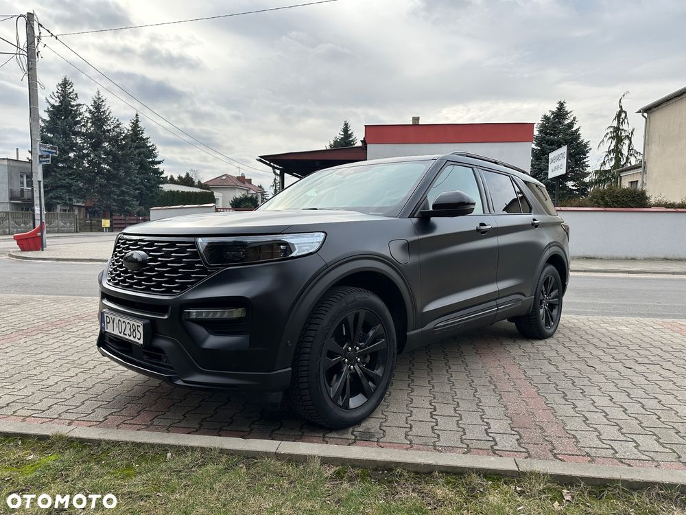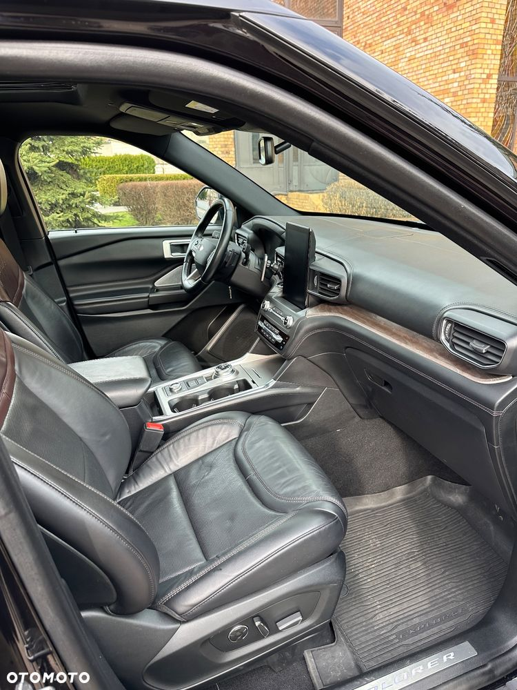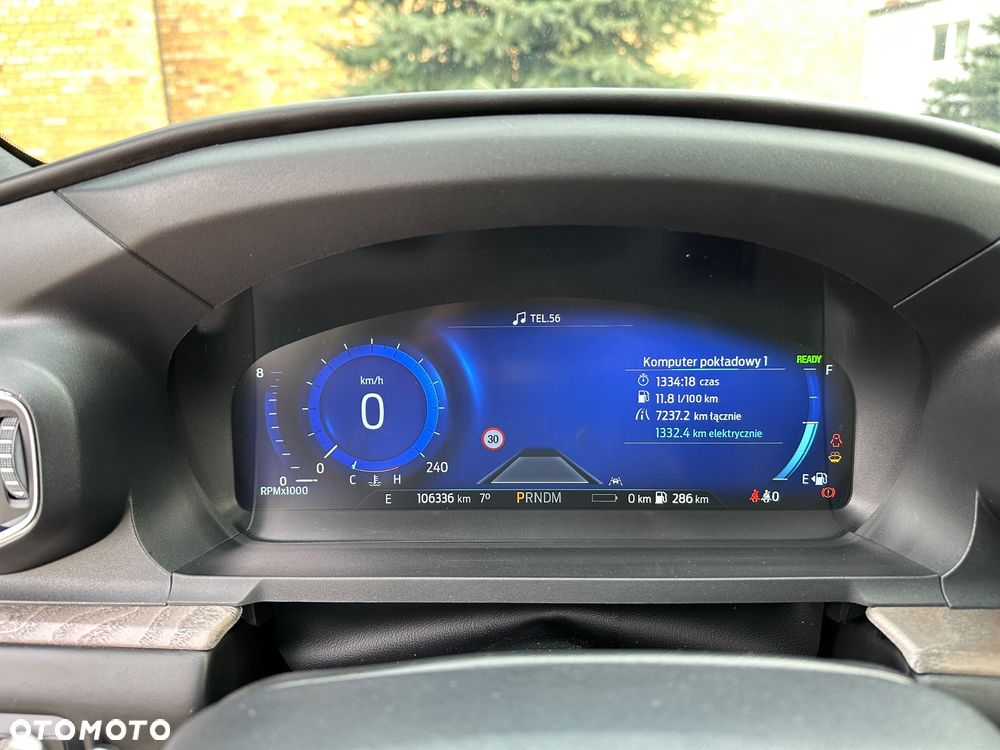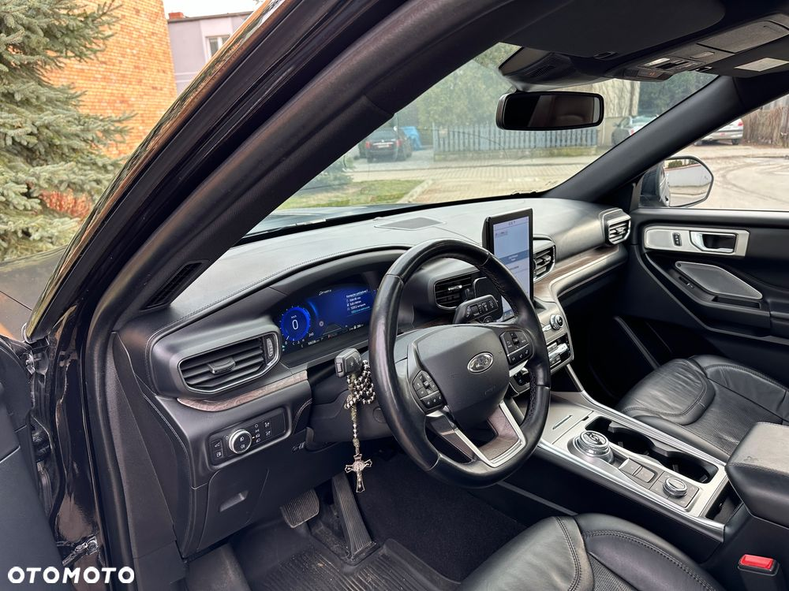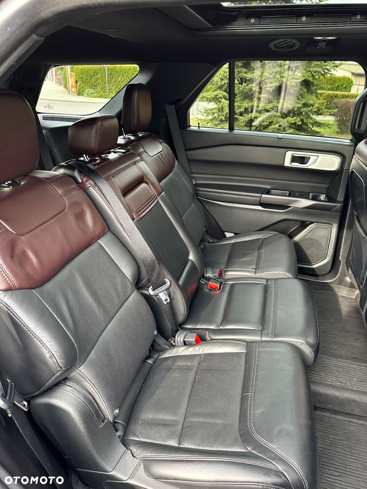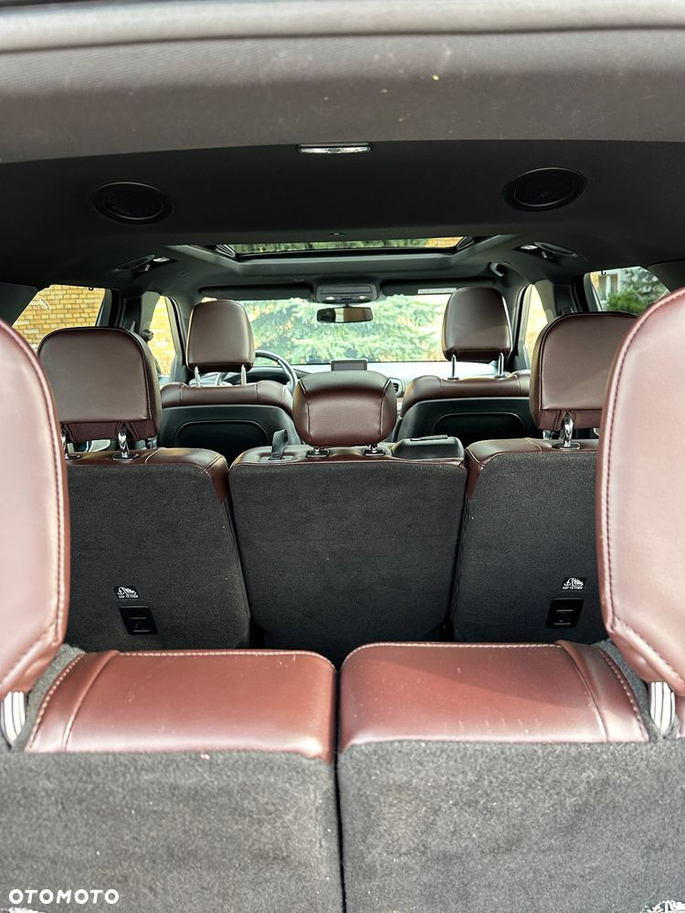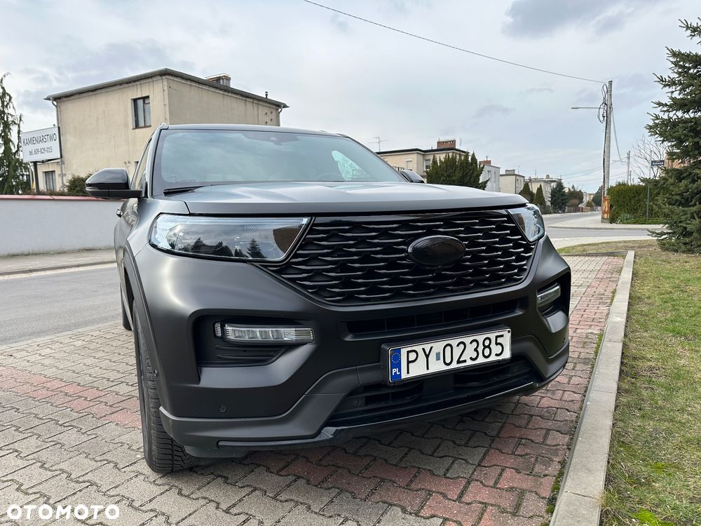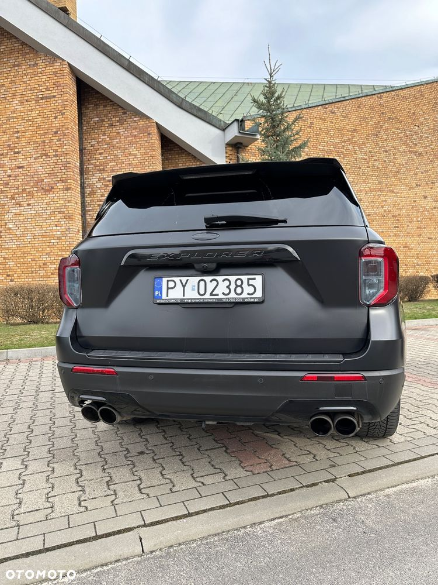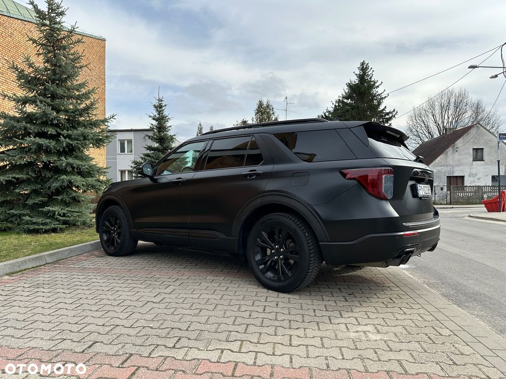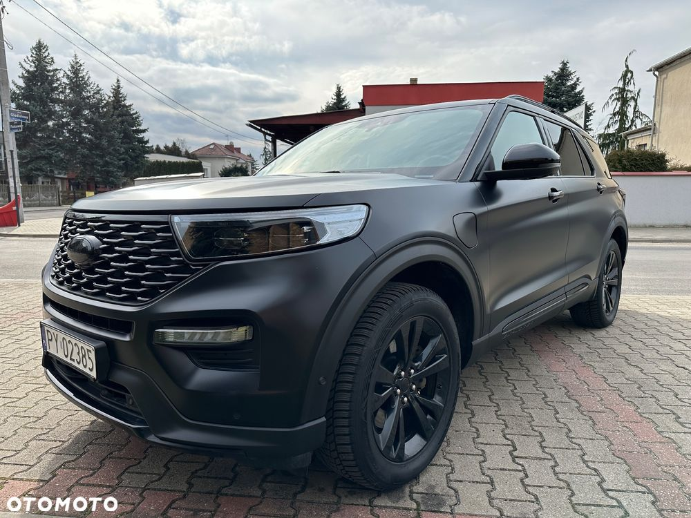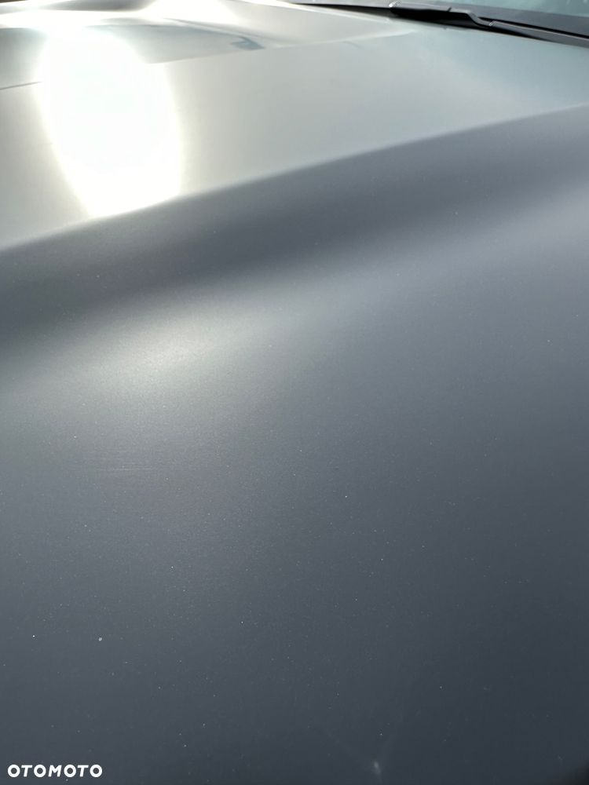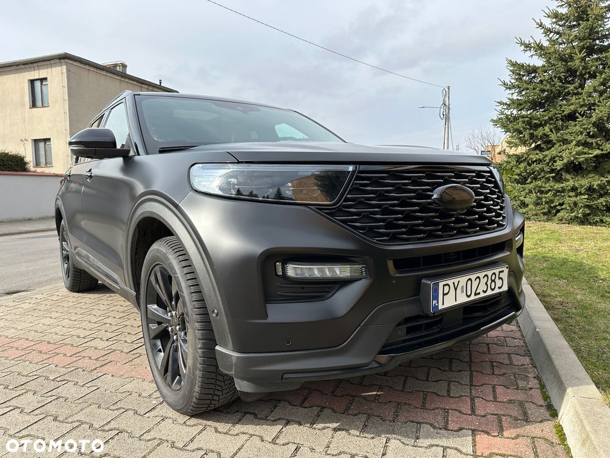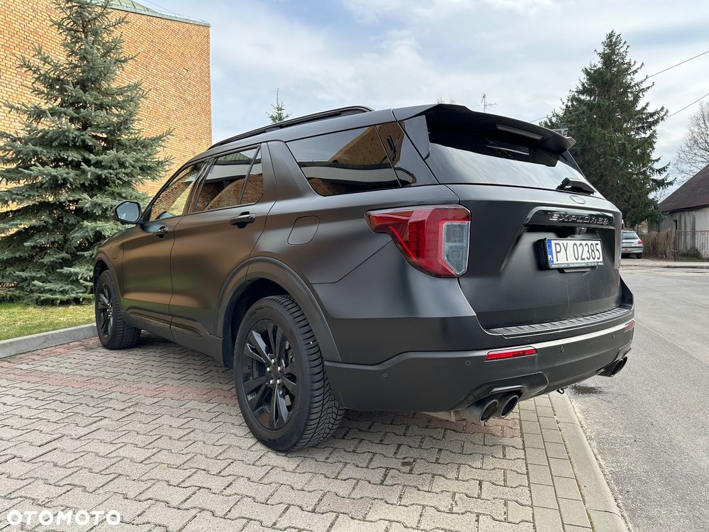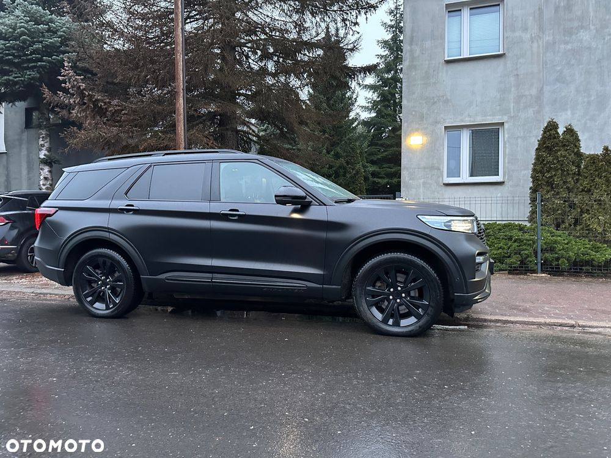